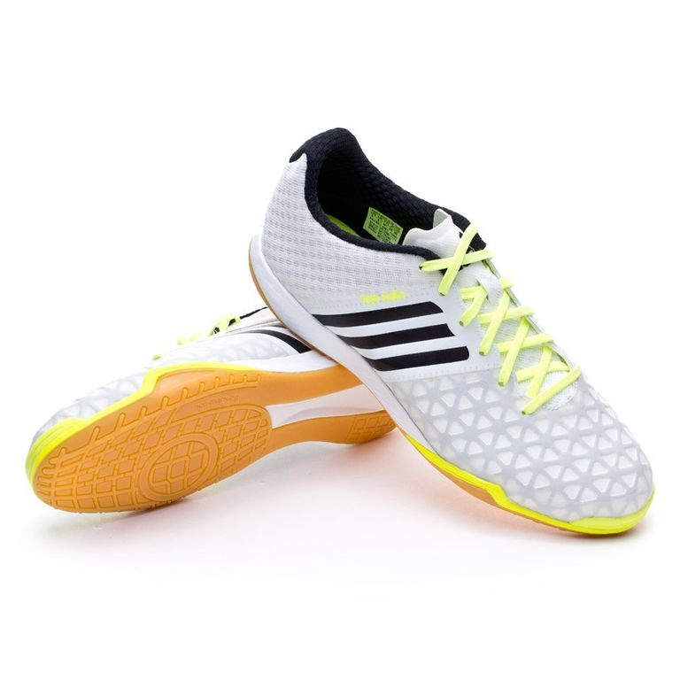

Футзалки Adidas Top Sala 15.1

Описание товара: Футзалки Adidas Top Sala 15.1
Производитель: Adidas
Тип: Обувь для мини-футбола
Сезон: Игра в зале
Подробное описание товара:
Игра меняется, и это берет игрока с полным контролем, чтобы создать пьесы, создать шансы и закончить их с клинической точностью. Тот, кто является непревзойденным в нападениях и нерушимая на оборону, с набором навыков, что не могу быть затронуты. Мужские ACE15.1 является футбол обуви для этого игрока. Он имеет ногами поверхность CTRL / WEB 3D, что делает, что каждое прикосновение, ловушка, и проход находятся на точке. С EVA мягкая подошвы и подошвы предназначены для перемещения на внутренних поверхностях.
Характеристики товара:
| Материал: | текстиль | синтетика | |||||
| Цвет: | светло-серый | белый | |||||
| Размеры: | 38 | 39 | 40 | 41 | 42 | 43 | 44 |
| Подошва: | 75% Резина | 20% EVA | 5% PVC | ||||
| Подкладка: | 100% текстиль | ||||||
| Верхняя: | 5% синтетика | 50% Ткань | |||||